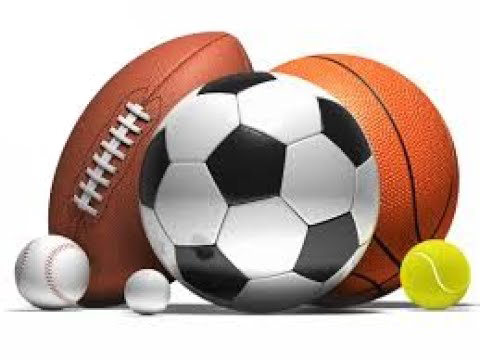

Мяч, Мячик - упругий (как правило) предмет сферической либо сфероидальной формы в основном используемый а играх и спортивных играх, таких как футбол[1], баскетбол[2], гольф[3], тенис[4] и в подобные им.
Особенности
Ряд свойств мячей делает их особенно удобными для детских и спортивных игр:
его легче отобрать или выбить у соперника.
В некоторых играх используют свойства аэродинамики мячей, закручивая мяч в разные строны таким образом, чтобы путём использования эффекта Магнуса добиться искривления траектории его полёта.